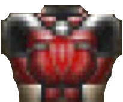

Step --/--
We built a Doom player AI using Deep Reinforcement learning.
While playing, it builds and updates an inner representation (memory) of what it sees from the game.
Reducing this memory could help the player learning to complete its task and thus lower both its training time and energy consumption footprint.
In this scenario, the player has to gather items in a specific order:
Green Armor Red Armor
 Health
Pack
Soul-sphere , with the
shortest path possible.
Let’s explore how reducing the memory of a trained agent influences its trajectory!
We used the Advantage Actor Critic (A2C) method, as presented by E.Beeching et. al. . This model learns through trial and error to associate an observation (i.e. matrice of pixels), at the time-step t to an action (at) such as turn left. It can achieve this by using neuronal networks with shared parameters theta.
The model is composed of three stages with different purposes. First, 3 convolutional layers to analyze and extract features from the input game screen (image). This results in a tensor of 16 features (ft) shaped as 10x4 matrices. Those features are then flattened into a vector of 1x32 using a Fully Connected layer. The purpose of such operation is to prepare them for the next stage, which is the memory.
The memory of such model is handled by a GRU layer, which takes a vector as input and outputs a hidden state (ht), a vector of 32 elements. GRU layers maintain and update a latent representation through time-steps using the combination of its current input (ft) and its previous hidden state ht-1. Each element of the hidden states is a quantity within the range[−1,1]. A value close to 0 represents low activity, whereas a value close to any extremity represents high activity. Hidden states can change their values between two time-steps. Such value changes can be widely observed across hidden states elements during trajectories. However, it remains unclear which elements correspond to which representations, and thus are responsible for decisions. Finally, the last stage consists of mapping the current hidden state h_t to a probability distribution over the 5 available actions (right, left, forward, forward+right, forward+left).
During the training phase, the agent is forced to explore its environment with random actions and can recieve rewards depending on their outcome: +0.5 for gathering an item in the right order (armor -> health pack -> soul-sphere), and -0.25 for gathering the wrong item. The combination of the observation, action and reward ordered by time-steps t forms a rollout which is then used to optimize the neural network with gradient descent.
For a more detailed introduction to sequential memory, we recommend reading Christopher Olah's blog on LSTMs, and the GRU paper . We also recommend Karpathy's blog for an introduction to Deep Reinforcement Learning
As detailed in the previous section, the agents actions are directly linked to its memory, therefore, each of its decisions depend on its current hidden state ht, and its values. However, such memory is hard to understand due to the fact that it is time-varying and using numerical values. Being able to erase memory elements, and to observe how the agent behaves without them, may help understanding and interpreting their roles in the decision process and information they may represent. In addition, the hidden states length is manually set by the model's designer, therefore such values maybe unfit to the agent's needs, which may results in unused or redundant elements. Removing them, and thus reducing the memory length can reduce the computation power needed by the agent, and both reduce the training time and the energy consumption footprint.
In order to simulate a reduced memory we implemented a method that allows to generate trajectories from agents with limited memory. Technically, we hijack the memory vectors by applying a mask to them before each decision. This mask is a 1x32 vector, with its values either set to 0 (remove the element) or set to 1 (keep the element). Each memory element is multiplied by its corresponding mask element, and therefore either have values as they should, or values constantly equal to 0 (i.e., inactive). The outcome of such operation is then used by the model to decide which action it should do. This method allows to change the agent's memory without having to retrain a model.
But how can we select which elements should be erased and those to preserve?
This project uses D3 to display data extrated from the Deep Reinforcement Learning developped in Pytorch. The video game DOOM is simulated with Vizdoom. In addition, this project uses our previous work DRLViz to analyse and generate episodes. -- Vizdoom, Pytorch, D3, DRLVIz.
Théo Jaunet, Romain Vuillemot and Christian Wolf , at LIRIS lab Lyon.
This work takes place in Théo jaunet's Ph.D. which is supported by a French Ministry Fellowship and the M2I project,